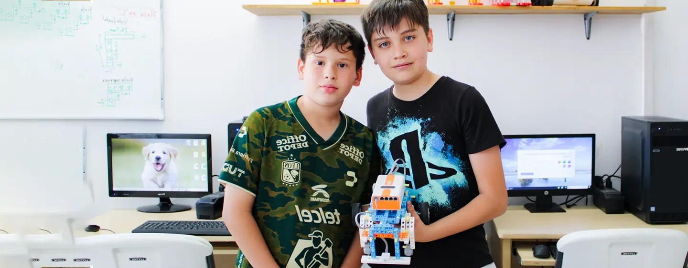
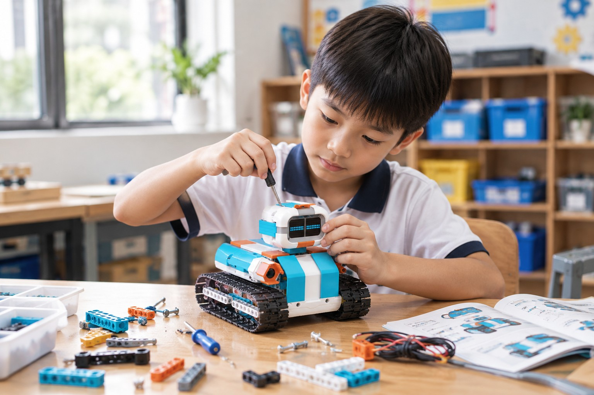
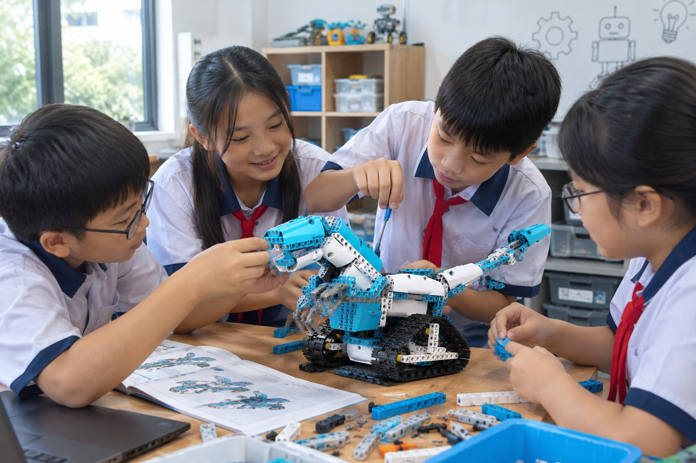
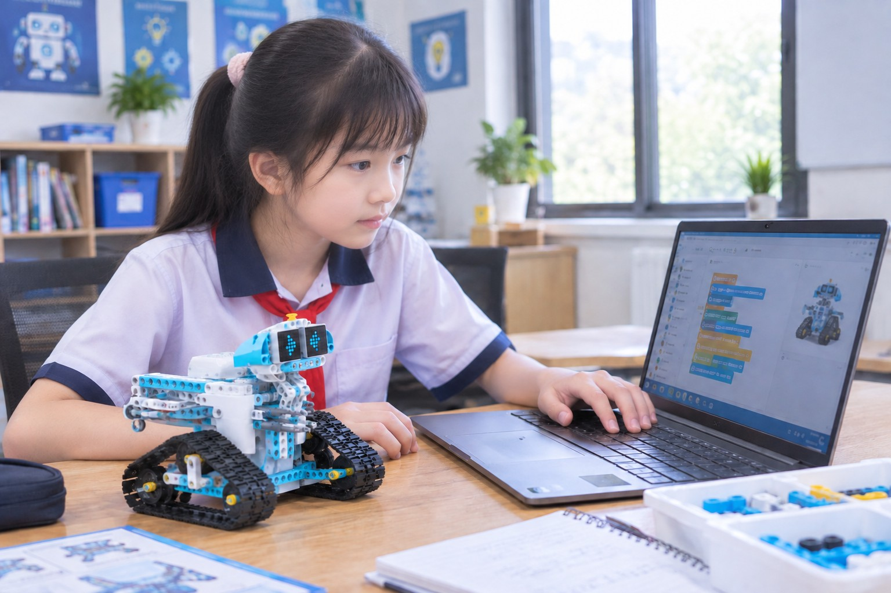
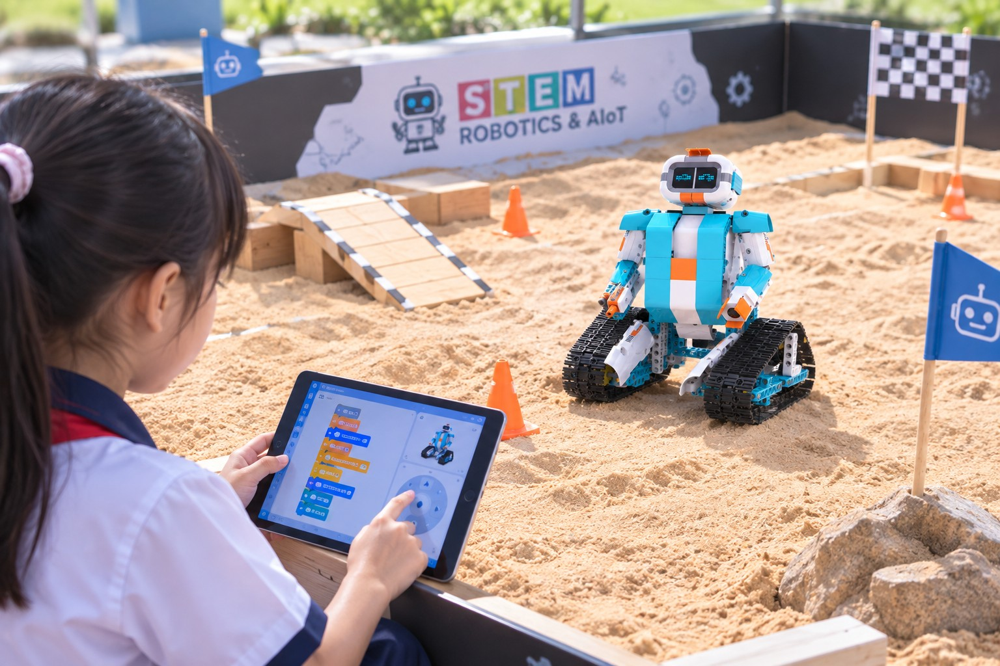

Young Maker
Nhà Sáng Chế Nhí
Nơi trẻ bắt đầu hành trình trở thành kỹ sư nhí.
Young Maker là lộ trình Robot AI 96 buổi trong khoảng 24 tháng (1 buổi/tuần), chia thành 4 học phần, mỗi học phần 6 tháng. Học sinh học với bộ WhalesBot AI Module 1S: bộ điều khiển có màn hình, loa, cổng 1–5 cho cảm biến và A–D cho động cơ; cảm biến hồng ngoại, cảm biến chạm, cảm biến dò line (Grayscale); cùng bánh răng, xích, trục vít, thanh nối để tạo ra cơ cấu thật. Các em lập trình kéo-thả trên phần mềm Whale (Scratch) rồi nạp xuống robot.
🛠️ Nền tảng robot → Robot trong đời sống → Kỹ sư robot → Nhà sáng chế nhỏ. Con đi từ lắp theo mẫu đến tự thiết kế và sáng chế robot giải quyết vấn đề thật.

96 buổi học – 4 học phần trong 24 tháng
"Ở học phần 1–2 con lắp theo mẫu để nắm nguyên lý; sang học phần 3–4 con tự thiết kế, thử nghiệm và cải tiến. Các buổi Thử thách và Dự án giúp con rèn kỹ năng giải quyết vấn đề và làm việc nhóm."
Lắp theo mẫu để hiểu robot gồm cảm biến – bộ não – động cơ
Con làm quen bộ điều khiển AI Module, lắp các cơ cấu cơ khí đầu tiên và viết những chương trình kéo-thả đầu tiên trên phần mềm Whale (Scratch). Mỗi buổi là một mô hình robot mới, tổng cộng 24 mô hình.
📅 24 buổi🗓️ Tháng 1–6🎯 24 mô hình robot
Con khám phá bánh răng, xích, đòn bẩy, tay quay – thanh lắc và hiểu vì sao kết cấu tam giác thì vững còn tứ giác thì co giãn được. Về lập trình, con học lệnh tuần tự, tốc độ, góc quay, rẽ nhánh, phép so sánh, âm thanh và màn hình biểu cảm; dùng cảm biến hồng ngoại và cảm biến chạm để điều khiển động cơ.

Mô phỏng những máy móc tự động quanh ta và bắt đầu tự thiết kế
Con kết hợp nhiều cảm biến, dùng biến số và tự thiết kế máy móc thông minh theo yêu cầu: cầu nâng, barie, máy bán hàng, cửa sổ tự động, máy đếm người… Tiếp tục 24 mô hình robot mới.
📅 24 buổi🗓️ Tháng 7–12🎯 24 mô hình robot
Con làm quen bộ truyền trục vít – bánh vít, số ngẫu nhiên, biến số, phép toán, logic mật khẩu và đa nhiệm. Với xe thông minh, con điều khiển 2 động cơ và dùng cảm biến dò line (Grayscale) để nhận biết vạch đen ở các ngã rẽ.

Hiểu vì sao máy móc chạy được: tính toán, giải thích và tối ưu
Con chuyển từ lắp theo mẫu sang tự thiết kế: tính tỉ số truyền, cân bằng lực – tốc độ, tìm hiểu cơ cấu 4 khâu, tay quay – con trượt, cắt kéo và lập trình có cấu trúc.
📅 24 buổi🗓️ Tháng 13–18🎯 Dự án Thành phố thông minh
Con học điều kiện kép VÀ / HOẶC, máy trạng thái, chương trình con và điều khiển tỉ lệ. Tư duy kỹ sư được rèn qua thí nghiệm có đối chứng, đo lường, bù sai số, các buổi Thử thách và dự án nhóm. Học phần khép lại với dự án Thành phố thông minh trình bày trước phụ huynh.

Tự tìm vấn đề, tự thiết kế, thi đấu và làm ra sản phẩm sáng chế của riêng mình
Con theo quy trình thiết kế kỹ thuật Hỏi – Nghĩ – Làm – Thử – Cải tiến để gỡ lỗi, vẽ lưu đồ thuật toán, tham gia các thử thách thi đấu và làm robot vì cộng đồng.
📅 24 buổi🗓️ Tháng 19–24🎯 Sản phẩm sáng chế
Con giải mê cung, đua dò line tính giờ, thiết kế robot sumo và cánh tay gắp vật, rồi làm ngôi nhà thông minh, nông trại thông minh, robot hỗ trợ người cao tuổi. 8 buổi cuối là dự án sáng chế riêng của từng nhóm, kết thúc bằng Ngày hội sáng chế trước phụ huynh và khách mời.

Sau 96 buổi học, con sẽ có:
- ⚙️Cơ khí & vật lý: từ bánh răng, xích, đòn bẩy đến tỉ số truyền, cơ cấu 4 khâu, cắt kéo.
- 🧠Tư duy lập trình: vòng lặp, rẽ nhánh, biến số, máy trạng thái, chương trình con, thuật toán.
- 👁️Cảm biến & tự động hóa: hồng ngoại, chạm, dò line; đo lường, bù sai số, điều khiển tỉ lệ.
- 🤖48+ mô hình robot và 4 dự án nhóm lớn.
- 🔁Quy trình thiết kế kỹ thuật: Hỏi – Nghĩ – Làm – Thử – Cải tiến.
- 🎤Tự tin thuyết trình sản phẩm sáng chế trước phụ huynh và khách mời.
Một buổi học diễn ra như thế nào?
- 1💬Gợi mởCâu chuyện, câu hỏi từ đời sống
- 2🔍Khám pháTìm hiểu nguyên lý khoa học
- 3🔧Lắp rápLắp mô hình theo mẫu hoặc tự thiết kế
- 4💻Lập trìnhViết chương trình, nạp và chạy thử
- 5🧪Đánh giáThử thách, sửa lỗi, cải tiến
- 6🎤Trình bàyGiới thiệu và thi đấu với bạn
Con tiến bộ qua từng học phần
Mỗi kiến thức được ôn lại và nâng dần độ khó ở học phần sau, nên con nhớ lâu và vận dụng được.
| Kỹ năng | HP1 · Nền tảng robot | HP2 · Robot trong đời sống | HP3 · Kỹ sư robot | HP4 · Nhà sáng chế nhỏ |
|---|---|---|---|---|
| Lắp ráp | Lắp theo mẫu; bánh răng, xích, đòn bẩy | Tự thiết kế theo yêu cầu; trục vít | Tỉ số truyền; cơ cấu biến đổi chuyển động | Tự thiết kế, tối ưu cho mục tiêu |
| Lập trình | Tuần tự, vòng lặp, rẽ nhánh, so sánh | Biến số, số ngẫu nhiên, phép toán | Điều kiện kép, máy trạng thái, chương trình con | Lưu đồ, thuật toán tìm đường, chiến thuật |
| Cảm biến | Hồng ngoại, cảm biến chạm | Kết hợp cảm biến, nhận màu, dò line | Đo lường, ngưỡng, bù sai số | Chọn cảm biến phù hợp vấn đề |
| Giải quyết vấn đề | Quan sát – thử – điều chỉnh | Thiết kế theo yêu cầu cho trước | Gỡ lỗi, thí nghiệm có đối chứng | Quy trình thiết kế kỹ thuật trọn vẹn |
| Trình bày | Chia sẻ sản phẩm với bạn | Thi đấu thân thiện | Dự án nhóm trước phụ huynh | Thuyết trình sáng chế |
Sau 96 buổi, con sẽ có
-
⚙️
Cơ khí & vật lý
Từ bánh răng, xích, đòn bẩy đến tính tỉ số truyền, cơ cấu 4 khâu, tay quay – con trượt, cắt kéo; tự thiết kế cơ cấu cho mục tiêu.
-
🧠
Tư duy lập trình
Tuần tự, vòng lặp, rẽ nhánh, biến số, điều kiện kép, máy trạng thái, chương trình con, lưu đồ và thuật toán tìm đường.
-
👁️
Cảm biến & tự động hóa
Hồng ngoại, cảm biến chạm, dò line; đo lường, bù sai số, điều khiển tỉ lệ để robot tự quyết định.
-
🏆
Giải quyết vấn đề
Quy trình thiết kế kỹ thuật, gỡ lỗi, thí nghiệm có đối chứng, làm việc nhóm và thuyết trình sản phẩm sáng chế.
Sau mỗi buổi học, phụ huynh có thể…
Một vài việc nhỏ mỗi tuần giúp con học vui và nhớ lâu hơn. Phụ huynh được mời dự buổi trình bày dự án cuối học phần 3 và Ngày hội sáng chế.
- 💬
Hỏi con về robot tuần này
Robot làm gì? Bộ phận nào giúp nó chuyển động?
- 🎬
Xem video sản phẩm
Khen nỗ lực và cách con sửa lỗi, không chỉ kết quả.
- 🏡
Tìm robot quanh nhà
Quạt, cửa tự động, barie… cùng con đoán chúng hoạt động thế nào.
12 mẫu robot có thể lắp từ bộ kit WhalesBot AI Module 1S
Ngoài 96 buổi theo lộ trình, học viên có thể tự do khám phá và lắp ráp thêm nhiều mẫu robot khác nhau từ cùng một bộ kit.